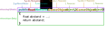

Funktionen¶
Lernziele
In diesem Kapitel lernst du was Funktionen beim Programmieren sind. Du lernst, wofür Funktionen verwendet werden, was Parameter und Rückgabewerte sind und wie du deine eigenen Funktionen schreiben kannst.
Wofür braucht man Funktionen?¶
Funktionen (bzw. Methoden) sind kleine Unterprogramme.
Vielleicht musst du für dein Spiel den Abstand zwischen zwei Objekten berechnen? Diese Berechnung benötigt man in den meisten Spielen sehr häufig.
Eine Möglichkeit ist: den dafür nötigen Code jedes Mal eintippen,
oder: mit Kopieren und Einfügen überall einzufügen, wo du ihn benötigst.
Beides ist aber nicht nur sehr viel Arbeit, sondern auch sehr schwer zu warten. Wenn du zum Beispiel später merkst, dass deine Berechnung einen Fehler enthält, musst du an allen Stellen im Programm den Fehler ausbessern.
Eine bessere Möglichkeit ist:
Du erstellst eine Funktion, die den Abstand zwischen zwei Punkten berechnet.
Die Erstellung einer Funktion nennt man Definition.
//Diese Funktion berechnet den Abstand zwischen zwei Objekten public float Abstand(GameObject object1, GameObject object2) { float abstand = Vector3.Distance(object1.transform.position, object2.transform.position); return abstand; }
Anstatt nun jedes Mal diese Berechnung händisch durchzuführen, kannst du diese Funktion verwenden.
Das Ausführen einer Funktion bezeichnet man als Aufruf.
float entfernung = Abstand(elli, ossi);
Außerdem musst du Änderungen nur an einer Stelle, nämlich im Code der Funktion, durchführen.
Aufbau einer Funktion¶

Der Zugriffsmodifikator legt fest, von welchen Klassen man auf die Funktion zugreifen kann.
Eine Funktion kann beliebig viele Parameter haben. Parameter legen genauer fest, was die Funktion tun soll. In unserem Beispiel wird über die Parameter festgelegt, von welchen zwei Spielobjekten der Abstand berechnet werden soll.
Die Parameter stehen im Body der Funktion als Variablen zur Verfügung.
Funktionen mit Rückgabewert¶
Das Schlüsselwort return beendet die Ausführung einer Funktion und gibt den danachstehenden Wert an den Methodenaufrufer zurück.
Zum Beispiel kannst du das Ergebnis eines Aufrufs der Funktion Abstand() in einer Variable speichern oder direkt in einem if-Statement verwenden:
if(Abstand(elli, pilz) < 100){ }
Funktionen ohne Rückgabewert¶
Nicht immer benötigt man eine Funktion mit Rückgabewert.
Für so ein Funktion gibt man als Rückgabetyp void an, außerdem benötigt man das Schlüsselwort return nicht.
zwei Beispielel:
// Diese Funktion erhöht den Punktestand und aktualisiert den Text des Punktestands. public void ErhoehePunktestand(int punkte) { punkteStand = punkteStand + punkte; AktualisierePunktestandText(); } // Diese Funktion aktualisiert den angezeigten Text des Punktestands. // Sie muss immer aufgerufen werden, nachdem sich die Punkte geändert haben. private void AktualisierePunktestandText() { scoreText.text = "Score: " + punkteStand; }
ACHTUNG
Je nach Programmiersprache gibt es unterschiedliche Definitionen der Begriffe Funktion, Prozedur und Methode. Oft werden als Funktionen nur jene Methoden mit Rückgabewert bezeichnet (In Anlehnung an den Funktionsbegriff aus der Mathematik). Jene ohne Rückgabewert heißen dann Prozedur. Im Kontext von C,C++ und C# werden jedoch meist sowohl Methoden mit als auch ohne Rückgabewert als Funktionen bezeichnet.